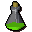

Antipoison(1)

| Config name | 1doseantipoison |
| Item id | 179 |
| Value | 144 gp |
| Weight | 20g |
| Members | Yes |
| Tradeable | Yes |
| Stackable | No |
| Options | Drink |
| Defined in | scripts/skill_herblore/configs/brewing/potions.obj |
Antipoison(1)
1 dose of antipoison potion.
Show 2 ground spawns on the world map → Open in knowledge graph →
Ground spawns
| Area | Coordinates | Level | Count | Map |
|---|---|---|---|---|
| Observatory | 2437, 3164 | 0 | 1 | view |
| Observatory | 2467, 3177 | 0 | 1 | view |